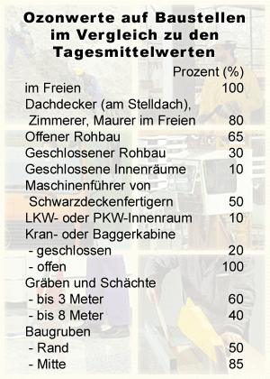

Ozon ist eine sehr instabiler chemischer Stoff, der im Normalfall schnell zerfällt. Trifft Ozon auf in der Luft befindliche Staubteilchen oder Rußpartikel, so nimmt die Konzentration schnell ab. Auch an Oberflächen (Wände in Rohbauten, Gruben, Kräne, Fahrzeuge) kommt es zu einem schnelle Verfallsprozess. Insofern ist die Ozonkonzentration auf Baustellen deutlich niedriger, als in der "freien Natur".